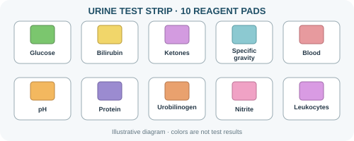

Laboratory Tests
- CBC
- Complete Blood Count used to evaluate different components of blood.
- HbA1c
- Provides information about average blood glucose levels over time.
- LFT
- Liver Function Test used to assess liver-related parameters.
- KFT
- Kidney Function Test used to evaluate kidney-related parameters.
- ECG
- Electrocardiogram records the electrical activity of the heart.
Urine Test Strip Reader
Select any reagent pad from the strip to view its test information.

Urine Test Information
| Parameter | Sample | Purpose |
|---|---|---|
| Glucose | Urine | Checks glucose presence |
| Protein | Urine | Checks protein presence |
| Blood | Urine | Checks blood-related reaction |
| pH | Urine | Measures urine acidity/alkalinity |